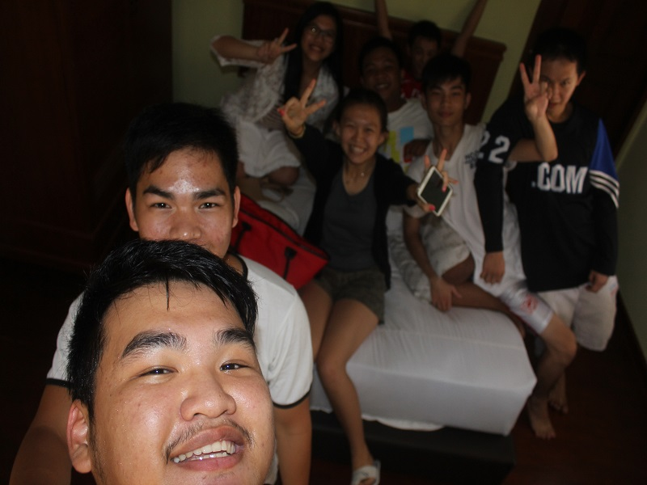
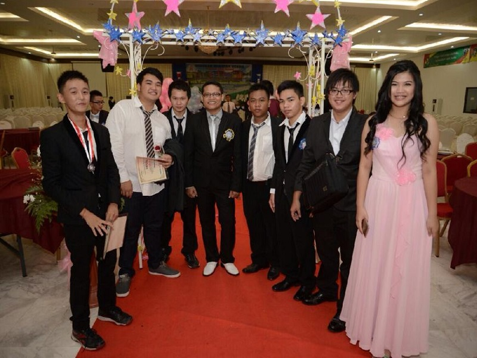
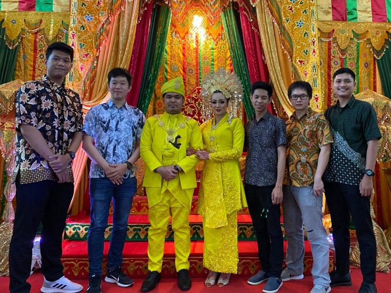
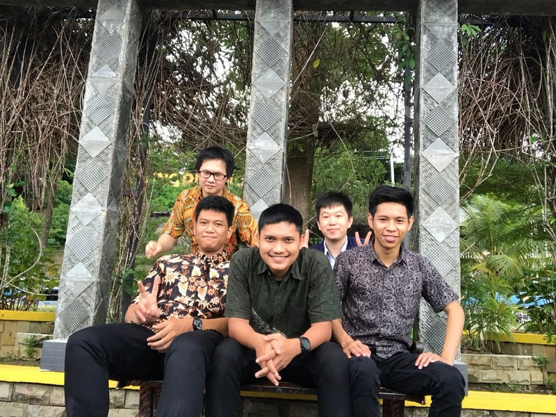
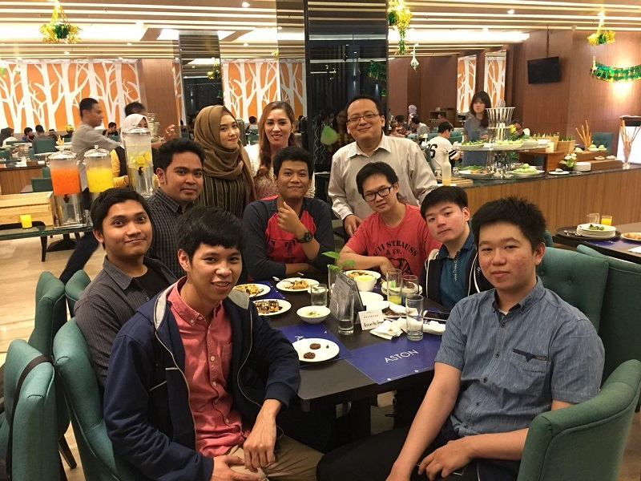

Hello, i am Cristono from Indonesia living in Batam City,
the owner of this blog. in my opinion maybe this blog
is too simple, sorry if grammar is bad because
my english is still passive
Basketball
In basketball I am not too focused and just a hobby. when
I was in middle school, I was very intent on basketball but
because there were some cases I didn't want to focus anymore
My Personality
My personality can be considered introverted, because
of that the circle of friends is not much and I can be said
to be a shy person who is quite difficult in relationships
started coding
when I first started going to college, I wanted to go into
graphic design or multimedia, but as time went by I began to
have a little interest in coding and started coding in
third semester
Listen Music
I also like listening to music when I am coding, the songs
I hear are usually Japanese, English and Chinese songs.
Japanese songs I usually hear aimer songs while English
and Chinese songs I hear randomly





biography
1
Born in Indonesia Batam City on the 14th of July 1995 and
began entering kindergarten in the Kalam Kudus Batam school in 2001
2
Continue to enter elementary school in the Kalam Kudus
Batam school in 2002 until 2009
3
Continued junior high school at Harapan Utama Batam school in 2009
until 2012
4
Continued vocational high school in Harapan Utama Batam school
with a major in computer network engineering in 2012 to 2015.
5
Continued studying at Batam International University
in 2015 majoring information systems
6
Graduated from Batam International University in 2020
with a bachelor science computer degree
career and work
worked as a C# software developer from 2017 to 2019
at PT Citra Global Dinamikawith a desktop application
project using Windows Presentation Foundation with
the MVVM (Model View View Model)
Designing final UIB lecture applications with the theme
of sales systems and decision support systems using the
PHP 7 programming language with the Laravel 5 framework